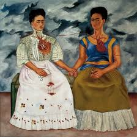

Considerada um ícone feminino nas artes
A pintora mexicana retratava em seus quadros as tragédias de sua vida e seus amores
-
Dentre os quadros mais famosos da artista são:
- Duas Fridas - 1939
- Diego e eu - 1949
- A coluna partida - 1944
- Autorretrato com cabelo cortado - 1940
Um pouco de sua história
Magdalena Carmen Frida Kahlo y Calderón foi uma pintora mexicana Frida Kahlo nasceu em 6 de julho de 1907 na casa de seus pais, conhecida como La Casa Azul (A Casa Azul), em Coyoacán, na época uma pequena cidade nos arredores da Cidade do México e hoje um distrito.eu pai, Guillermo Kahlo, cujo nome oficial era Carl Wilhelm Kahlo, nasceu em Pforzheim Alemanha, filho de Henriette Kaufmann e Jakob Heinrich Kahlo. A própria Frida afirmava que seu pai era de ascendência judaico-húngara, mas pesquisadores demonstraram que os pais dele não eram judeus, mas luteranos alemães. Guillermo Kahlo chegou ao México em 1891, aos 19 anos de idade, e logo mudou seu nome alemão, Wilhelm, para o equivalente em espanhol, "Guillermo".